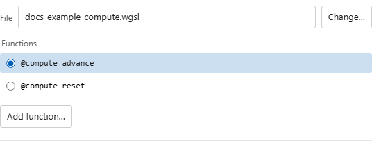

Compute Passes¶
Compute passes run Slang or WGSL compute shaders before the fragment passes in each frame. They can update persistent storage buffers, write textures for later passes to sample, and repeat work several times per frame. Compute is available for .slang and .wgsl shaders.
A compute pass can share a source file with Image, render buffers, or other compute passes. Its path selects that file and entryPoints.compute selects the function. A relative path resolves from the main shader's directory, and an @/ path resolves from the workspace root.
Configuring a Compute Pass¶
- Choose + New → Compute in the config panel.
- Use the File row and Change… to reuse a file from the config, browse workspace files, or create a source file. Standalone browses files in its virtual workspace.
- Select one of the available
@computeor[shader("compute")]function rows. Add function… appends a uniquely named native function to this pass's source and selects it. There is no Built-in/Native chooser for compute. - Configure Channels, Dispatch, Execution, and Output. Output includes the floating-point format and Output layers. The consuming channel chooses a layer in Misc.
The panel uses the same file and function controls as render passes, without fragment, vertex, or geometry settings. A source can contain several compute functions; adding one does not create another pass automatically.

Writing a Compute Shader¶
Declare the workgroup size with [numthreads] and use SV_DispatchThreadID to identify the current thread:
[shader("compute")]
[numthreads(64, 1, 1)]
void simulateParticles(uint3 id : SV_DispatchThreadID)
{
if (id.x >= 4096) return;
particles[id.x].position += particles[id.x].velocity * iTimeDelta;
}
If a source file has more than one [shader("compute")] entry point, set entryPoints.compute in the pass config to select one. The older entryPoint field still loads for compatibility.
The usual Slang built-ins and channel objects are available in compute passes. Use an explicit mip level when sampling a channel, for example iChannel0.SampleLevel(uv, 0.0). Script-driven custom uniforms are also available.
WGSL compute shaders use @compute entry points with @workgroup_size, and the thread id comes from the global_invocation_id built-in:
@compute @workgroup_size(64)
fn simulate(@builtin(global_invocation_id) id: vec3u) {
if (id.x >= 4096u) { return; }
particles[id.x].position += particles[id.x].velocity * iTimeDelta;
}
If a WGSL file declares more than one @compute entry point, set entryPoints.compute in the pass config to select one. The older entryPoint field still loads for compatibility. Channel sampling needs an explicit mip level here too: iChannel0SampleLevel(uv, 0.0).
Storage Buffers¶
Storage buffers hold persistent data across frames. Choose + New → Storage buffer in the visual config, then select that buffer's card to edit its declaration:
| Field | Meaning |
|---|---|
count |
Number of elements |
elementType |
A Slang type such as float4, uint, Atomic<uint>, or a struct from common — or the WGSL equivalent such as vec4<f32>, u32, atomic<u32> |
WGSL configs may use WGSL spellings for the same types; Slang spellings still resolve for configs written before WGSL support:
| Slang | WGSL |
|---|---|
float / float2 / float3 / float4 |
f32 / vec2<f32> / vec3<f32> / vec4<f32> (vec2f / vec3f / vec4f also work) |
int / int2 / int3 / int4 |
i32 / vec2<i32> / vec3<i32> / vec4<i32> (vec2i / vec3i / vec4i also work) |
uint / uint2 / uint3 / uint4 |
u32 / vec2<u32> / vec3<u32> / vec4<u32> (vec2u / vec3u / vec4u also work) |
Atomic<uint> / Atomic<int> |
atomic<u32> / atomic<i32> |
float2x2 / float3x3 / float4x4 |
mat2x2<f32> / mat3x3<f32> / mat4x4<f32> (mat2x2f / mat3x3f / mat4x4f also work) |
Storage survives across frames and recompiles when its declaration is unchanged. The storage workspace has Settings and read-only Inspect tabs, binary initialization, numeric struct fields, and configurable reset behavior. See GPU Storage for the layout, lifecycle options and pass capture points.
Compute passes can read and write storage; vertex and fragment shaders can only read it. Access buffers by name without declaring them in your shader:
Dispatch Modes¶
| Mode | Coverage |
|---|---|
| Output texels | One thread per output texel |
| Element count | A fixed number of elements |
| Raw workgroups | Explicit X × Y × Z workgroup counts |
| Cover storage buffer | Matches the named storage buffer's element count |
| Cover channel | Matches the channel's current texture dimensions |
Repeated and One-Shot Dispatch¶
Repeats runs the same pass multiple times per frame. iDispatch gives the zero-based repetition index, useful for solver substeps.
Run once runs a pass only on the first frame after compile, recompile, or Reset.
Writing a Texture Output¶
Add a buffer input that references your compute pass, then use writeOutput in the compute shader to set its pixels:
[shader("compute")]
[numthreads(8, 8, 1)]
void writeTexture(uint3 id : SV_DispatchThreadID)
{
uint2 size = uint2(iResolution.xy);
if (id.x >= size.x || id.y >= size.y) return;
writeOutput(id.xy, float4(1.0, 0.2, 0.1, 1.0));
}
Use the Output layers control in the compute pass settings for layered output, and pick Compute output layer in that channel’s Misc tab. The layer defaults to zero and is saved as the input’s layer field.
Frame Order¶
- Compute passes, in declaration order.
- Fragment buffer passes, in declaration order.
Image.
Storage writes are visible to every later pass in the frame. Use two named buffers when you need separate read and write lanes.
Warning
GLSL cannot run compute passes or bind storage buffers. They are silently skipped when a .glsl shader is loaded. Switch to a .slang or .wgsl shader to use compute features.
WGSL Debugging Limits¶
Compute debugging previews one invocation at a time; it cannot reproduce threads
working together in a workgroup. global_invocation_id comes from the canvas
coordinate, with z = 0 and iDispatch = 0. Direct global_invocation_id,
local_invocation_id, workgroup_id, and local_invocation_index parameters are
supported with literal workgroup dimensions. Other entry parameter forms report
an unsupported diagnostic.
Read-only storage access is supported. Workgroup memory, barriers, atomics, subgroup operations, and writes to configured storage are not supported during compute debugging. Use normal compute rendering for code that needs cooperative workgroups or storage writes. Vertex-stage debugging is unavailable.
Limitations¶
- Compute shaders require Slang or WGSL; there is no GLSL fallback.
- Compute debugging inspects one invocation at a time and cannot reproduce cooperative workgroups. See the limits for Slang and WGSL.
- Indirect dispatch is not supported.
- Storage buffers are shared across passes.
- Custom-typed buffers cannot be accessed from
common; define the struct there and access from pass files.
Next¶
Channels — sample media and outputs from arbitrary fragment or compute passes